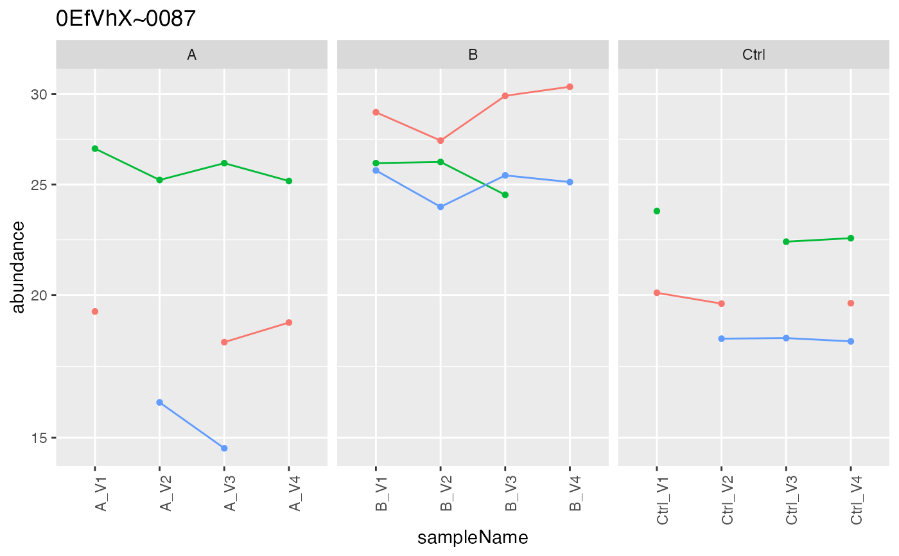
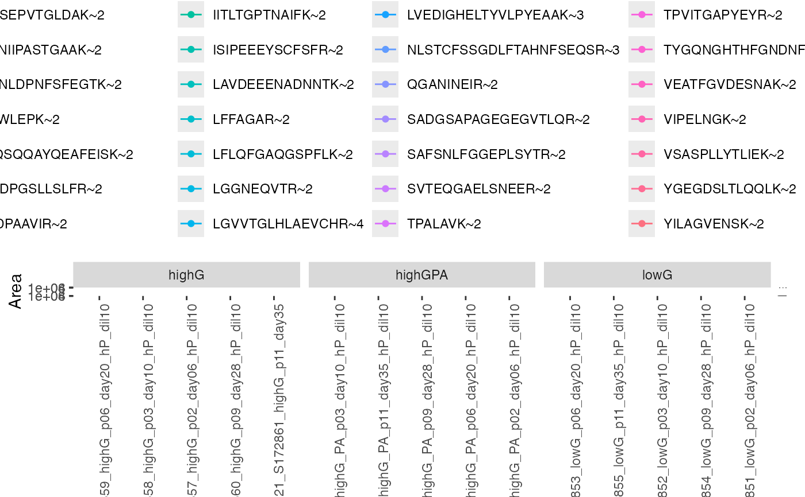

R/tidyMS_aggregation.R
plot_hierarchies_line.RdPlot peptide intensities of protein as a function of the sample and factor
plot_hierarchies_line(
res,
proteinName,
config,
separate = FALSE,
show.legend = FALSE
)data.frame
title of plot
AnalysisConfiguration
if heavy and light show in one plot or with separate y axis?
Other aggregation:
INTERNAL_FUNCTIONS_BY_FAMILY,
aggregate_intensity_topN(),
estimate_intensity(),
intensity_summary_by_hkeys(),
medpolish_estimate(),
medpolish_estimate_df(),
medpolish_estimate_dfconfig(),
medpolish_protein_estimates(),
plot_estimate(),
plot_hierarchies_add_quantline(),
plot_hierarchies_line_df(),
rlm_estimate(),
rlm_estimate_dfconfig()
Other plotting:
ContrastsPlotter,
INTERNAL_FUNCTIONS_BY_FAMILY,
UpSet_interaction_missing_stats(),
UpSet_missing_stats(),
medpolish_estimate_df(),
missigness_histogram(),
missingness_per_condition(),
missingness_per_condition_cumsum(),
plot_NA_heatmap(),
plot_estimate(),
plot_heatmap(),
plot_heatmap_cor(),
plot_hierarchies_add_quantline(),
plot_hierarchies_boxplot_df(),
plot_hierarchies_line_df(),
plot_intensity_distribution_violin(),
plot_pca(),
plot_raster(),
plot_sample_correlation(),
plot_screeplot()
istar <- sim_lfq_data_peptide_config()
#> sample already exists
#> completing cases
config <- istar$config
analysis <- istar$data
xnested <- analysis |>
dplyr::group_by_at(config$table$hierarchy_keys_depth()) |> tidyr::nest()
prolfqua::plot_hierarchies_line(xnested$data[[1]], xnested$protein_Id[[1]],config )
#> Warning: Removed 7 rows containing missing values or values outside the scale range
#> (`geom_point()`).
#> Warning: Removed 1 row containing missing values or values outside the scale range
#> (`geom_line()`).

bb <- prolfqua_data('data_skylineSRM_HL_A')
conf <- bb$config_f()
analysis <- bb$analysis(bb$data, conf)
#> creating sampleName from fileName column
#> completing cases
nest <- analysis |> dplyr::group_by(conf$table$hierarchy_keys_depth()) |> tidyr::nest()
prolfqua::plot_hierarchies_line(nest$data[[1]],
"DUM",
conf,
separate = TRUE)
#> Warning: Removed 802 rows containing missing values or values outside the scale range
#> (`geom_point()`).
#> Warning: Removed 462 rows containing missing values or values outside the scale range
#> (`geom_line()`).
prolfqua::plot_hierarchies_line(nest$data[[1]],
"DUM",
conf,
separate = TRUE,
show.legend = TRUE)
#> Warning: Removed 802 rows containing missing values or values outside the scale range
#> (`geom_point()`).
#> Warning: Removed 462 rows containing missing values or values outside the scale range
#> (`geom_line()`).
